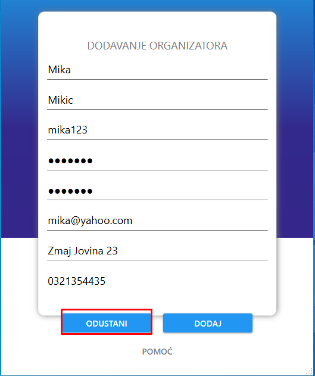

Nakon klika na dugme "Dodaj", korisniku se otvara novi prozor sa formom za registraciju organizatora
Forma redom sadrzi polja za ime, prezime, korisnicko ime, lozinku, potvrdu lozinke (mora da bude identicna vrednost kao i kod polja za lozinku), email, adresu i telefon
Nakon sto je korisnik popunio sva polja, on moze da registruje organizatora klikom na dugme "DODAJ"
Ukoliko je korisnik odustao od registracije organizatora, klikom na dugme "ODUSTANI" prekida se proces registrovanja, prozor se zatvara.
